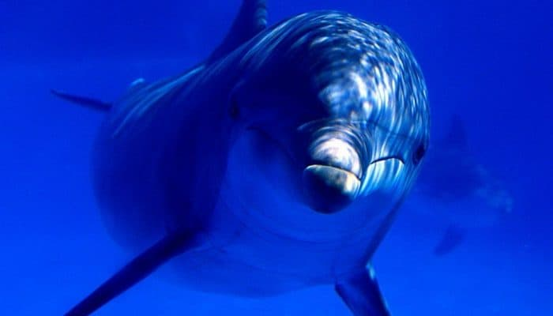

Эти удивительные животные
Дельфинами называют млекопитающих из семейства зубатых китов отряда китообразных. На планете существует около сорока видов этих животных, и увидеть их можно в любой точке Мирового океана. Большинство дельфинов предпочитают жить в тропических и субтропических широтах, но есть и такие, которым нравятся более холодные воды, поэтому увидеть их можно недалеко от Арктики, а некоторые виды встречаются и там, и там.
Например, хотя беломордый дельфин обитает в основном в Северной Атлантике, его нередко можно увидеть и у берегов Турции.Большинство представителей семейства (например, афалины, беломордый дельфин) – морские жители, но есть четыре вида, которые предпочитают жить в пресной речной или озёрной воде. Обитает речной дельфин в Азии, а также в водах южноамериканских рек Амазонки и Ориноко.
К сожалению, если раньше представители этого семейства встречались часто, то теперь речной дельфин из-за потери мест обитания, загрязнения окружающей среды, уменьшения количества пищи и небольших популяций практически исчез и занесён в Красную книгу.
Описание
Длина дельфинов колеблется от полутора до десяти метров. Самым маленьким дельфином в мире является Мауи, обитающий недалеко от Новой Зеландии: длина самки не превышает 1,7 метра. Крупным обитателем морских глубин считается беломордый дельфин длиной около трёх метров. Самым крупным представителем является косатка: длина самцов достигает десяти метров.
Стоит заметить, что самцы обычно на десять-двадцать сантиметров длиннее самок (исключение составляют дельфины косаток – здесь разница около двух метров). Весят в среднем от ста пятидесяти до трёхсот килограмм, косатка – около тонны.Спина морских дельфинов бывает серого, голубого, тёмно-коричневого, чёрного и даже розового (альбиносы) цветов. Передняя часть головы может быть как однотонной, так и белой (например, беломордый дельфин клюв и переднюю часть лба имеет белого цвета).
У одних видов пасть спереди округлой формы, клювовидный рот отсутствует. У других – небольших размеров голова заканчивается вытянутым ртом в форме приплюснутого «клюва», причём пасть имеет такую форму, что людям, наблюдающими за ними, кажется, будто они всегда улыбаются, а потому у них часто возникает непреодолимое желание поплавать с дельфинами. При этом впечатление не портит даже огромное количество зубов одинаковой конусообразной формы – их у дельфинов около двухсот.
Благодаря вытянутому телу и гладкой, эластичной коже эти животные во время движения почти не чувствуют сопротивления воды. Благодаря этому они способны очень быстро передвигаться (средняя скорость дельфина составляет 40 км/ч), погружаться на глубину около ста метров, выпрыгивать из воды на девять метров в высоту и пять – в длину.
Ещё одной уникальной особенностью этих морских млекопитающих является то, что почти все виды дельфинов (исключение составляет амазонский речной дельфин и ещё несколько разновидностей) неплохо видят как под водой, так и над поверхностью. Такую способность они имеют благодаря строению сетчатки, одна часть которой отвечает за картинку в воде, другая – над её поверхностью.
Поскольку киты и дельфины – родичи, как и все представители китообразных, они на протяжении длительного периода вполне способны пребывать под водой. Но, в кислороде всё-таки нуждаются, поэтому постоянно всплывают на поверхность, показывая голубую мордочку и пополняя запасы воздуха через дыхло, которое под водой перекрывается. Даже во время сна животное находится в пятидесяти сантиметрах от поверхности и не просыпаясь, выплывает наружу каждые полминуты
Способ жизни
Живут дельфины стаями и очень плохо переносят одиночество. Хотя лидера у них нет, все действия выполняют согласовано: вместе охотятся, воспитывают детей, развлекаются, выполняя друг за другом удивительной красоты прыжки.
Дельфина считают одним из самых разумных млекопитающих нашей планеты: вес его мозга составляет 1700 грамм, что на триста грамм больше человеческого, причём извилин в коре головного мозга также в два раза больше.Этим объясняется их высокоразвитое социальное сознание, способность сочувствовать, готовность помогать больным и раненым сородичам, а также утопающим людям.
Помогают дельфины довольно активно: если один из членов стаи ранен или едва держится на плаву, поддерживают его возле поверхности, чтобы он не смог утонуть и захлебнуться. То же самое они проделывают в отношении человека, помогая ещё и добраться до берега. Некоторые учёные объясняют, почему дельфины это делают, заботой о популяции: каждая особь в стае ценна – и нужно сделать всё, чтобы сохранить ей жизнь.
Отношения с людьми
Люди и дельфины имеют давнюю и сложную историю: ещё недавно на животных велась активная охота, что привело к полному и частичному вымиранию некоторых видов. После того как промысел был запрещён, ситуация стала лучше, но появилась новая тенденция: отлавливать этих животных для шоу (тем более что они очень сообразительны и схватывают всё на лету) и давая возможность далёким от моря людям поплавать с дельфинами. Надо заметить, идея не наилучшая, поскольку, если в природных условиях обитатели моря живут от тридцати до пятидесяти лет, в неволе – только семь.
На такую их скорую гибель влияет прежде всего слишком пассивный образ жизни, даже несмотря на постоянные тренировки для участия в шоу, чрезвычайно ограниченное пространство и качество воды: отсутствие в ней полного набора необходимых им питательных и минеральных веществ.В последнее время люди и дельфины научились лучше взаимодействовать (прежде всего это касается человека, поскольку животные эти общительны, дружелюбны и миролюбивы). Тем более что общение с этими млекопитающими идёт на пользу практически всем: давая возможность послушать песни дельфинов, пообщаться, погладить голубую спину, покормить рыбой, поплавать с дельфинами, психотерапевты и врачи эффективно используют для лечения таких болезней у детей, как церебральный паралич, ранний детский аутизм и т. д.
Для общения животные используют жесты (повороты, прыжки, различные стили плавания, голову, плавники, хвост), а также голос: звуки дельфинов – это около 14 тыс. сигналов, а про песни дельфинов наслышаны все. Эти уникальные животные способны воспринимать частоту колебаний до 200 тыс./сек, тогда как ухо человека – до 20 тысяч. Также у них в четыре раза лучше развита способность анализировать звуки дельфинов, отделяя друг от друга частоты (чтобы узнать, почему дельфины обладают такими способностями, в последнее время проводится немало исследований). Общение происходит в основном при помощи ультразвука (особенно удобно им его использовать для передачи звука на огромные расстояния). Песни дельфинов – это не только ультразвук: звуки дельфинов нередко звучат на средней частоте и выражаются щелчками, скрипами, свистом (исследования показали, что свою речь они воспринимают картинками-иероглифами).